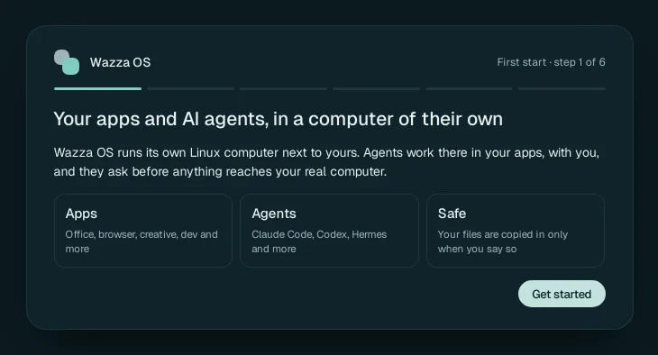
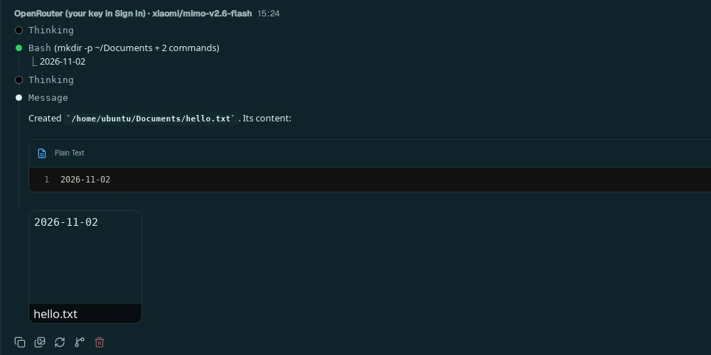
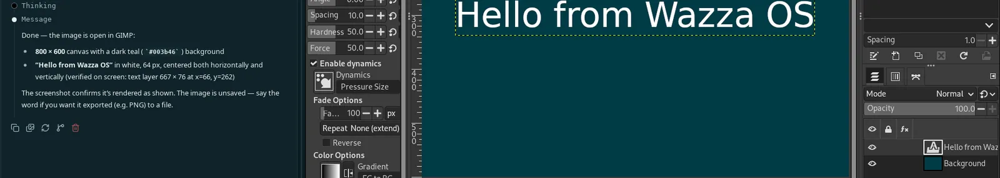

Quick start
From nothing to an agent working in an app, in about ten minutes: install, start, give your agents a model, ask a first question, then let an agent work in an app while you watch.
1. Install Wazza OS#
Paste this in a terminal, on the Linux computer where Wazza OS will live. It finds your package type, checks the
release's signature and installs it; it asks for your password once, for sudo:
$ curl -fsSL https://os.wazza.ai/install.sh | shTo test first, what your computer needs, or a package to download yourself: Install, update, remove.
2. Start it#
Open Wazza OS from your app menu. The first start shows six short steps (about two minutes): click Get started, check that every line of the computer check says ok, skip or fill the sign-in and agent steps, keep the default apps, and click Set up Wazza OS, then Open Wazza OS. Each step in detail: The first start.

3. Give your agents a model#
Agents think with an AI model, which someone pays for. Pick one way (you can add the others later):
- A plan you already pay for (Claude, ChatGPT, Grok, Google): Home › Sign in › Logins › Log in with ….
- An API key: Home › Sign in › API keys › + Add key on the provider's card, paste the key, Check and save. An OpenRouter key opens hundreds of models, some of them free.
- A Wazza OS account: Home › Sign in › Email and password.

Details: Sign in, plans and API keys.
4. Ask a first question#
Click + at the end of the tab strip, then Chat (Ask any agent).
Type a request and press Enter. Try one that makes the agent work in the VM: Create a file named hello.txt in my Documents folder with today's date in it, then show me its content.

The agent works in the VM: it can make files, run commands and use the web there, without touching your own computer. Everything about Chats: Chats, agents and models.
5. Let an agent work in an app#
Click +, type gimp in Search apps, click GIMP. It installs (a minute or so), then opens in a new tab with its own Chat on the left.
In that Chat, ask: Create a new 800 x 600 image with a dark teal background and write Hello from Wazza OS in large white letters in the middle.
Watch GIMP on the right: the agent uses GIMP's own tools, then checks the result.

More: Apps and tabs, and how agents use an app's window: Drive.
6. Go further#
Several agents at once
One request, several apps, each with its own agent working at the same time.
Read →Files and sharing
Bring your files into the VM and get results back on your computer.
Read →Skills
What agents know about each app, and how they learn from your Chats.
Read →Settings
Theme, resources, defaults for new Chats, and every other option.
Read →